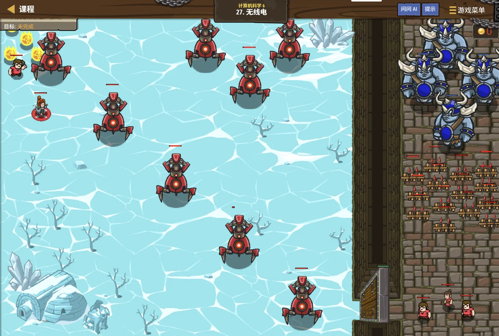

故事：哨站里有一串机器人炮台，靠"下一个是谁"的链接首尾相连。
其中一个被等离子烧坏了，得把它换掉——可它在队伍正中间，前后都有人。
戈登说：先找到它前面那位，再改他们的"下一个"。
扣哒考级 · GESP PYTHON 五级 · 第 4 单元 | 星砂绿洲 STARDUST OASIS
商队铁链 链表
Linked Lists

塞尼克
沙海向导 · 你的向导
黄昏的沙丘上，一支骆驼商队正蜿蜒前行。
塞尼克的鞭子往前一指：你看这一队——每一峰骆驼只系着后面一峰， 别的它一概不管。
你愣了一下：那……要找第十峰怎么办？
从第一峰一峰一峰数过去。他笑了，麻烦吗？可你要是在中间插进一峰， 只要打开一枚锁环就行了——后面的队伍一根毛都不用动。
塞尼克的鞭子往前一指：你看这一队——每一峰骆驼只系着后面一峰， 别的它一概不管。
你愣了一下：那……要找第十峰怎么办？
从第一峰一峰一峰数过去。他笑了，麻烦吗？可你要是在中间插进一峰， 只要打开一枚锁环就行了——后面的队伍一根毛都不用动。
塞尼克 · 沙海向导
前面几课你用的都是数组——它就像一排编好号的格子，位置固定、随叫随到。但它有个躲不开的毛病：想在中间插一个东西，就得把后面全部往后挪。
这一课学链表：一种"不靠编号、只靠牵引"的数据结构。
assets/illustrations/py-L5-04-01_caravan_chain.webp
【配图位】黄昏沙丘上一支蜿蜒的骆驼商队，每峰骆驼与后面的货车只用一枚发光的锁环相连，彼此之间没有轨道、也没有编号牌；商队从近处一直延伸到地平线，最前面一名披沙色斗篷的向导牵着第一峰骆驼并回头望向看不见尾的长队，天边是暖橙色的落日。
0 单元导语与目标
Unit Overview
0.1 学习目标
1学完这个单元，你将能……
- 说出数组在"插入删除"上的麻烦
- 用结构体和指针描述一个链表结点
- 从表头一路遍历到表尾
- 在指定结点之后插入新结点
- 正确删除一个结点（并释放它）
- 用快慢指针找出链表的中间结点
2对标 GESP 考纲（Python 五级）
- 理解链表的结构与存储特点
- 掌握单链表的定义、遍历、插入与删除
- 掌握头指针与尾指针的作用
- 了解双向链表与循环链表
- 考核目标：能判断插入/删除代码是否正确、能算出时间复杂度
0.2 考纲对照
| 本单元小节 | 对应考纲条目 | 真题常考形式 |
|---|---|---|
| 1 为什么需要链表 | 链表与数组的区别 | 存储是否连续、插入删除谁更快 |
| 2 结点与指针 | 链表的结点结构 | 结点里都有什么；头指针的作用 |
| 3 遍历与快慢指针 | 链表的遍历 | 遍历循环怎么写；快慢指针怎么走 |
| 4 插入与删除 | 链表的插入删除 | 几行代码的正确顺序（必考） |
| 5 链表与数组的对比 | 两种结构的取舍 | 各自的优缺点；双向链表 |
1 为什么需要链表
Why Linked Lists
1.1 数组的软肋
在数组中间插入一个数，有多麻烦
TEXT
数组原本是： 10 20 30 40 50
↑0 ↑1 ↑2 ↑3 ↑4
想在 20 后面插入 25：
① 把 30、40、50 全部往后挪一格
10 20 30 40 50 (空)
10 20 (空) 30 40 50
② 再把 25 放进空出来的位置
10 20 25 30 40 50
插一个数，动了一串数。
如果数组里有 100 万个数、要插在最前面——
那就要挪 100 万次。太慢了。两个根本原因
① 数组的位置是固定的，插一个就得给别人腾地方；
② 因为位置固定，所以必须"把后面全部挪开"
② 因为位置固定，所以必须"把后面全部挪开"
打个比方：
数组就像电影院里编好号的一排座位——想在 3 号和 4 号之间塞进一个人，
4 号往后所有人都得挪一个位子。
如果座位是"按票号固定"的，那就必须挪；这排有一千个人，就得挪一千次。
而链表像"手拉手的队伍"——想插进去，只要松开两双手、重新牵上就行， 后面的人一个都不用动。
如果座位是"按票号固定"的，那就必须挪；这排有一千个人，就得挪一千次。
而链表像"手拉手的队伍"——想插进去，只要松开两双手、重新牵上就行， 后面的人一个都不用动。
1.2 链表的想法：只记住下一节
链表的核心思想：
不用一个连续的数组，改用一堆"散落在各处的结点"，
每个结点里额外存一个"下一个结点在哪里"。
于是——
① 想插入？只要改两个结点里的"下一节是谁"，别人一根毛都不用动；
② 想删除？只要把前一个结点的"下一节"直接跳过后一个，也是两步的事；
③ 代价呢？想找第 10 个结点，只能从头一个一个数过去—— 因为谁也不知道第 10 个在内存的哪个角落。
这就是链表：用"找得慢"换来"改得快"。
于是——
① 想插入？只要改两个结点里的"下一节是谁"，别人一根毛都不用动；
② 想删除？只要把前一个结点的"下一节"直接跳过后一个，也是两步的事；
③ 代价呢？想找第 10 个结点，只能从头一个一个数过去—— 因为谁也不知道第 10 个在内存的哪个角落。
这就是链表：用"找得慢"换来"改得快"。
图 2（SVG）：数组连着放，链表散着放
2 结点与指针
Nodes & Pointers
2.1 结点长什么样
一个链表结点：数据 + 指向下一个的指针
Python
class Node:
def __init__(self, value):
self.value = value # ① 数据：这一节装的东西
self.next = None # ② 指针：下一节在哪儿（没有下一节就是 None）
# 造一个新结点
p = Node(20)结点只有两样东西
① 数据
value；② 指针 next——这就是"链"的全部秘密
注意
所以它只占一个指针的大小（8 字节）——这个概念和上一单元学的指针完全一样。
顺便提醒：用
struct Node 里出现了 Node *next;。
这看起来像"自己包含自己"，但其实不是——next 存的是另一个结点的地址，
而不是把那个结点整个塞进来。所以它只占一个指针的大小（8 字节）——这个概念和上一单元学的指针完全一样。
顺便提醒：用
new 申请出来的结点，用完要 delete 掉。
2.2 头指针与尾指针
一个链表，靠两个指针"抓两头"
Python
head = None # 头指针：指向第一节
tail = None # 尾指针：指向最后一节
# 空链表：head 和 tail 都是 None
# 有个头指针，就能找到整条链
# 有个尾指针，就能 O(1) 在末尾接上新的一节
# 在表尾插入（已知 tail 时）
s = Node(99)
if head is None: # 还是一条空链
head = s
tail = s
else:
tail.next = s # 老末尾指向新结点
tail = s # 尾指针挪到新结点有了尾指针，尾插只要 2 步
时间复杂度
如果没有尾指针 得从头一路走到最后一节，那是
O(1)如果没有尾指针 得从头一路走到最后一节，那是
O(n)
为什么头指针是"命根子"？
因为链表是散着放的——除了头指针，你不知道别的结点在哪。
一旦头指针丢了，整条链就"失联"了： 后面的结点还在内存里，可你再也找不到它们。
所以：① 别随手改
一旦头指针丢了，整条链就"失联"了： 后面的结点还在内存里，可你再也找不到它们。
所以：① 别随手改
head；② 遍历时用另一个临时指针，别拿 head 去跑。
assets/illustrations/py-L5-04-03_head_tail.webp
【配图位】沙丘上的骆驼商队，队首与队尾各被一只发光的机械手（形似一只小箭头夹钳）稳稳握住，表示"头指针"与"尾指针"；中间的骆驼一峰牵着一峰，锁环依次发光延伸到远处；一名披沙色斗篷的向导站在队首的机械手旁，远处地平线泛着余晖。
3 遍历与快慢指针
Traversal
3.1 一路走到底
遍历链表的标准写法
Python
# 写法一：用 while
p = head # ★ 从 head 开始，但不动 head
while p is not None:
print(p.value, end=" ")
p = p.next # ★ 走到下一节
# 写法二：先把链上的值收进一个列表，再打印（更省心）
values = []
p = head
while p is not None:
values.append(p.value)
p = p.next
print(values)要点
① 用临时指针
② 判断条件用
p，不要改 head 本身；② 判断条件用
p != nullptr——走到最后一个结点的 next（空）就停
最容易崩的一个写法：
正确做法：判断
顺序记牢：先看、再走。
while (p->next != nullptr) 会漏掉最后一个结点。
走完最后一个结点后 p 变成 nullptr，
下一轮判断 p->next 就是在访问空指针——程序直接崩溃。正确做法：判断
p != nullptr，
在循环体里先取用 p->value、再 p = p->next。顺序记牢：先看、再走。
3.2 快慢指针找中间
快指针走两步，慢指针走一步
Python
def middle(head):
slow = head
fast = head
while fast is not None and fast.next is not None:
slow = slow.next # 慢的走一格
fast = fast.next.next # ★ 快的走两格
return slow # 慢的正好停在中间横线上该填的就是
原理 快的速度是慢的两倍——快指针走到头时，慢指针正好走了一半
fast = fast->next->next;原理 快的速度是慢的两倍——快指针走到头时，慢指针正好走了一半
为什么循环条件要写两个？
因为快指针一次要跳两格，所以必须"提前看一眼两格之后还在不在"。
while (fast != nullptr && fast->next != nullptr)——
两个都要判，缺一不可。fast != nullptr：保证 fast->next 能安全访问
（否则就是在空指针上取成员，程序崩溃）。fast->next != nullptr：保证 fast->next->next 能安全访问。因为快指针一次要跳两格，所以必须"提前看一眼两格之后还在不在"。
图 4（SVG）：快慢指针找中间结点
4 插入与删除
Insert & Delete
4.1 在 p 之后插入
两步搞定，顺序不能反
Python
# 在结点 p 之后插入新结点 s
s = Node(25)
s.next = p.next # ① 新结点先接上后面的链
p.next = s # ② 再让 p 指向新结点
# 正确顺序：先接后，再改前
# 如果写反：
# p.next = s # p 指向 s，原来的后继丢了
# s.next = p.next # 这时 p.next 已经是 s 了 → s 指向自己！OUTPUT 插入成功，时间复杂度
和链表的长度完全无关，只要知道 p 在哪儿就行
O(1)——和链表的长度完全无关，只要知道 p 在哪儿就行
两句的顺序，是链表最经典的坑。
必须"先接后、再改前"：
写反了会怎样？
①
②
记法：先用"老的 p->next"去接新结点的尾巴，最后才动 p->next。
s->next = p->next; 再 p->next = s;写反了会怎样？
①
p->next = s; —— p 指向了新结点，可原来的后继"没人指向"了；②
s->next = p->next; —— 这时 p->next 已经等于 s，
于是 s->next = s——新结点指向了自己，后面的整条链全丢了。记法：先用"老的 p->next"去接新结点的尾巴，最后才动 p->next。
4.2 删除结点
单链表：删 p 的后继
Python
# 删除 p 后面的那个结点
q = p.next # ① 先记住要删的是谁
p.next = q.next # ② 让 p 跳过 q，直接连上 q 的后面
# ③ Python 有垃圾回收：没有变量指向 q 之后，它占的内存会被自动收走
# ★ 如果只写一句 p.next = p.next.next，链是接对了，
# 但 q 那个结点再也找不到 —— 在需要手动释放内存的语言里就是"内存泄漏"三步
① 记住它；② 跳过它；③ 释放它
时间复杂度也是
时间复杂度也是
O(1)
双向链表：删中间的结点 p
Python
class Node:
def __init__(self, value):
self.value = value
self.prev = None # 指向前一个
self.next = None # 指向后一个
# 删除 p（p 既不是头也不是尾）
p.prev.next = p.next # ① 前面的结点跳过 p，直接连 p 的后面
p.next.prev = p.prev # ② 后面的结点跳过 p，直接连 p 的前面双向链表的好处
有了
prev，删 p 时不用再从表头找它的前驱——两句就够assets/illustrations/py-L5-04-02_insert_delete_link.webp
【配图位】锁环特写：一枚发光的锁环被打开，一辆新车顺势滑进两节之间，前后两节重新扣上、其余车辆纹丝不动；画面另一侧对照演示——另一枚锁环被打开、一辆车被取出来，前后的车重新对接；背景是沙丘与落日余晖。
5 链表与数组的对比
Comparing
5.1 各自的长处
| 操作 | 数组 | 单链表 |
|---|---|---|
| 访问第 k 个元素 | O(1)——直接算地址 | O(n)——得从头数过去 |
| 在开头插入 | O(n)——后面全得挪 | O(1)——改一个指针 |
| 在已知结点后插入 | O(n) | O(1) |
| 删除已知结点的后继 | O(n) | O(1) |
| 在末尾追加 | O(1)（有长度记录时） | O(1)（有尾指针时） |
| 内存是否连续 | 连续 | 不连续，可以散放 |
| 能否随机访问 | 能 | 不能，只能顺序访问 |
| 空间开销 | 只存数据 | 每个结点多一个指针 |
一句话选结构：
经常"按下标取东西" → 用数组。
经常"在中间插进插出" → 用链表。
链表用"找得慢"换来了"改得快"；数组用"改得慢"换来了"找得快"。
没有哪个更好，只有哪个更合适——这就是学数据结构的意义。
经常"在中间插进插出" → 用链表。
链表用"找得慢"换来了"改得快"；数组用"改得慢"换来了"找得快"。
没有哪个更好，只有哪个更合适——这就是学数据结构的意义。
5.2 双向链表
双向链表：两个方向都能走
Python
class Node:
def __init__(self, value):
self.value = value
self.prev = None # 前驱
self.next = None # 后继
# 好处一：能倒着走
p = tail
while p is not None:
print(p.value, end=" ")
p = p.prev
# 好处二：删除自己不用找前驱
# 单链表删 p 得先从表头找到 p 的前一个，那是 O(n)
# 双向链表有 prev，直接就是 O(1)
# 代价：每个结点多存一个引用；插入删除时要多改一处
# 还有"循环链表"：让尾结点的 next 指回 head
# tail.next = head → 走到末尾会自动回到开头三种常见变体
① 单链表（只有 next）；
② 双向链表（有 prev 和 next）；
③ 循环链表（尾连回头，转圈走）
② 双向链表（有 prev 和 next）；
③ 循环链表（尾连回头，转圈走）
带哨兵结点的双向循环链表：四步操作不能随意调换顺序。
有时为了代码简洁，会在链表头尾各放一个"哨兵结点"——
它们不存数据，只是为了让插入删除的逻辑统一。
但在这种链表里插入一个新结点，仍然要按固定顺序改指针： 先让新结点接上两边，再让两边接上新结点。
"四步操作无论什么顺序执行结果都正确"——这句话是错的。
顺序一旦颠倒，中间会出现"某边指不到"的瞬间，链就断了。
但在这种链表里插入一个新结点，仍然要按固定顺序改指针： 先让新结点接上两边，再让两边接上新结点。
"四步操作无论什么顺序执行结果都正确"——这句话是错的。
顺序一旦颠倒，中间会出现"某边指不到"的瞬间，链就断了。
6 代码实战
Level Practice
关卡
无线电
进入关卡 →思路：链表只能顺着 next 一格一格走，
所以想换掉中间的一个，必须一边走一边记住"前一个"；
找到之后，让前一个指向备份、备份指向后面，链接就接上了。

assets/stages/py-L5-04-stage1_radio.webp
【关卡截图位】请把《无线电》的游戏画面截图放到此处（放入 assets/stages/ 目录，文件名为 py-L5-04-stage1_radio.webp）。
重点示例：替换链表中间的一环
Python
current = head
while current.next is not None: # 顺着 next 一格一格走
if current.next.id == brokenId: # 找到坏掉的那个的"前一个"
backup.setNext(current.next.next) # ① 备份接管它的后继
current.setNext(backup) # ② 前一个指向备份
break
current = current.next # 继续往后走要点 必须先接上后面、再改前面，否则链子就断了；
setNext() 是关卡要求的写法
和本单元的关系：
这就是链表的看家本领：插入和删除只动两三个
代价是"不能直接跳到第 i 个"——只能从头顺着走。拿访问速度换修改速度，这就是链表。
去扣哒世界闯这一关 →
next，不用像数组那样把后面的元素整体搬家。代价是"不能直接跳到第 i 个"——只能从头顺着走。拿访问速度换修改速度，这就是链表。
7 常见陷阱
Common Pitfalls

扣哒鸭 · 调试官
链表这块，错法高度集中——就四类。前两条真题都考过。
1
删除结点时，先
delete 再用它。
扣哒鸭：
正确顺序是：先记下
Node *p = head; delete p; head = p->next; ——
这是典型错误：p 已经被释放了，再去读 p->next 就是在访问已释放的内存。正确顺序是：先记下
head->next，再 delete。正确写法：
Node *q = head; head = head->next; delete q;2
插入时两句顺序写反。

扣哒鸭：务必先
写反的话，第二步会让新结点指向它自己——后面的整条链瞬间全部丢失。
s->next = p->next;，再 p->next = s;。写反的话，第二步会让新结点指向它自己——后面的整条链瞬间全部丢失。
记牢：先接后面，再改前面
3
遍历时拿
head 直接往前跑。
扣哒鸭：
结点还在内存里，可你再也没法找到它们了。
while (head != nullptr) head = head->next; ——
循环结束时 head 变成了 nullptr，整条链失去了唯一的入口。结点还在内存里，可你再也没法找到它们了。
正确做法：用临时指针
for (Node *p = head; p != nullptr; p = p->next)4
遍历条件写成
p->next != nullptr。
扣哒鸭：这个写法会漏掉最后一个结点——因为最后一节的 next 是空的。
更糟的是，如果拿它去取成员，走到空指针上就会直接崩溃。
判断条件统一写
更糟的是，如果拿它去取成员，走到空指针上就会直接崩溃。
判断条件统一写
p != nullptr。正确写法：
while (p != nullptr)7 常见陷阱
Common Pitfalls

扣哒鸭 · 调试官
链表题的错误几乎都和"顺序"有关。四条，条条都是"链子断了"。
1
插入时先改了前面的 next，把后面弄丢了。
扣哒鸭：必须先让新节点接住"后面"，再让前面指向新节点。
顺序一反，原来的后半截就找不回来了。这是链表第一大坑。
顺序一反，原来的后半截就找不回来了。这是链表第一大坑。
正确顺序：新节点.next = 前一个.next；前一个.next = 新节点
2
遍历时忘了
node = node["next"]，程序死循环。
扣哒鸭：循环体里必须有"往前走一步"的那句，
否则 node 一直停在原地，while 永远不会结束。
正确写法：循环最后一句写
node = node["next"]3
删除了头节点，head 却没更新。
扣哒鸭：头节点被删掉时，head 必须指向原来的第二个节点。
否则 head 还指着一个"已经被踢出队伍"的节点，整条链就断了。
否则 head 还指着一个"已经被踢出队伍"的节点，整条链就断了。
正确做法：
head = head["next"]4
以为链表也能
node[2] 直接取第 3 个。
扣哒鸭：链表不支持随机访问。
想要第 3 个？只能从头走三步。
这就是链表"找元素慢"的代价——它省下的时间都用在增删上了。
这就是链表"找元素慢"的代价——它省下的时间都用在增删上了。
正确做法：用循环从头走 k 步
8 题目练习
Practice
第 1 题改编自 2026 年 9 月 · Python 五级 第 3 题，其余为原创练习题。
改编自 2026 年 9 月 · Python 五级 · 第 3 题单选题
绿洲的驼队排成一条单项链表，要找出中间的结点。下面的函数使用快慢变量（快慢指针），横线处应填写（ ）。
1 class Node: 2 def __init__(self, val): 3 self.value = val 4 self.next = None 5 6 def middle(head): 7 slow = head 8 fast = head 9 while fast is not None and fast.next is not None: 10 slow = slow.next 11 _______________ 12 return slow
A.fast = fast.next
B.fast = fast.next.next
C.fast = slow.next
D.fast = slow.next.next
B.fast = fast.next.next
C.fast = slow.next
D.fast = slow.next.next
查看答案与详解
答案：B。快慢指针的分工是：慢的一次走 1 步，快的一次走 2 步。
慢的已经从 head 走到 slow.next，快的就必须走两步：
为什么这样能找到中点？快的是慢的速度的 2 倍，快的走到末尾时，慢的正好在中间 —— 打个比方：两人同时出发，一个跑得快一倍，快的到终点时，慢的刚跑到一半。
A 错：两人速度一样，快指针会先停在末尾附近；
C、D 错：把慢指针的路径混进了快指针，指针会乱套。
这条链表的常用技巧还能找"倒数第 k 个结点"和"判断有没有环"。
对应小节3 遍历与快慢指针。
慢的已经从 head 走到 slow.next，快的就必须走两步：
fast = fast.next.next。为什么这样能找到中点？快的是慢的速度的 2 倍，快的走到末尾时，慢的正好在中间 —— 打个比方：两人同时出发，一个跑得快一倍，快的到终点时，慢的刚跑到一半。
A 错：两人速度一样，快指针会先停在末尾附近；
C、D 错：把慢指针的路径混进了快指针，指针会乱套。
这条链表的常用技巧还能找"倒数第 k 个结点"和"判断有没有环"。
对应小节3 遍历与快慢指针。
原创练习题单选题
链表与数组（列表）相比，最大的优势是（ ）。
A.访问第 i 个元素更快
B.在中间插入、删除元素更方便
C.占用的内存更少
D.可以用下标随机访问
B.在中间插入、删除元素更方便
C.占用的内存更少
D.可以用下标随机访问
查看答案与详解
答案：B。链表的强项是插入和删除——
只需改动几根"指针"，不用像数组那样让元素整体搬家。
A、D 恰恰相反：链表不支持随机访问，找第 i 个元素要从头走 i 步。
C 也不对：链表每个节点还要额外存"下一个的引用"，占用反而略多。
对应小节1 为什么会有链表；5 链表与列表的对比。
A、D 恰恰相反：链表不支持随机访问，找第 i 个元素要从头走 i 步。
C 也不对：链表每个节点还要额外存"下一个的引用"，占用反而略多。
对应小节1 为什么会有链表；5 链表与列表的对比。
原创练习题单选题
下列 Python 代码执行后，输出的结果是（ ）。
1 a = {"val": 1, "next": None}
2 b = {"val": 2, "next": None}
3 c = {"val": 3, "next": None}
4 a["next"] = b
5 b["next"] = c
6 head = a
7 count = 0
8 node = head
9 while node:
10 count = count + 1
11 node = node["next"]
12 print(count)
A.1 B.2 C.3 D.死循环
查看答案与详解
答案：C。链表是 a → b → c → None，一共 3 个节点。
循环走到 c 时，
要点：这种"数长度"的写法是链表最基础的遍历模板。
对应小节3 遍历链表。
循环走到 c 时，
c["next"] 是 None，循环结束。要点：这种"数长度"的写法是链表最基础的遍历模板。
对应小节3 遍历链表。
原创练习题判断题
在链表中要访问第 5 个节点，可以直接用下标一步取到。（ ）
查看答案与详解
答案：错误（×）。链表不支持随机访问，
要想拿到第 5 个节点，必须从 head 开始，顺着 next 走 4 步。
对比：数组/列表可以用
对应小节3 遍历链表；5 链表与列表的对比。
对比：数组/列表可以用
a[4] 一步取到——这就是"数组访问快"的含义。对应小节3 遍历链表；5 链表与列表的对比。
原创练习题单选题
向链表 p 和 q 之间插入一个新节点 newNode，正确的写法是（ ）。
A.
B.
C.
D.随便怎么写都行
p["next"] = newNode 然后 newNode["next"] = qB.
newNode["next"] = p["next"] 然后 p["next"] = newNodeC.
newNode["next"] = p 然后 q["next"] = newNodeD.随便怎么写都行
查看答案与详解
答案：B。必须先让新节点"接住后面"，再让前面"指向新节点"。
如果按 A 项先改
口诀：先接后，再改前。
对应小节4 插入与删除。
如果按 A 项先改
p["next"]，原来的 q 就找不到了，
后面的整段链子全部丢失。口诀：先接后，再改前。
对应小节4 插入与删除。
原创练习题单选题
下列关于链表遍历的说法，正确的是（ ）。
A.循环条件应该写
B.循环体里不需要改变 node
C.必须用 for 循环才能遍历链表
D.链表无法被完整遍历
while node:，结束条件是走到 NoneB.循环体里不需要改变 node
C.必须用 for 循环才能遍历链表
D.链表无法被完整遍历
查看答案与详解
答案：A。链表遍历的标准写法：
B 错：不改变 node 就会死循环；C 错：while 更常用（for 不方便表达"直到 None"）。
对应小节3 遍历链表。
node = head → while node: →
处理 node → node = node["next"]。B 错：不改变 node 就会死循环；C 错：while 更常用（for 不方便表达"直到 None"）。
对应小节3 遍历链表。
原创练习题判断题
在 Python 里做练习时，列表已经足够好用，链表更多是为了理解"数据结构的选择"。（ ）
查看答案与详解
答案：正确（√）。Python 的列表在很多场景下性能都不错，
实际写题时优先用它。
学习链表的价值在于：理解"不同结构在不同操作上各有快慢"，从而学会根据场景选结构。
对应小节5 链表与列表的对比。
学习链表的价值在于：理解"不同结构在不同操作上各有快慢"，从而学会根据场景选结构。
对应小节5 链表与列表的对比。
原创练习题编程题
题目要求：用字典模拟节点，手工构造一条链表 5 → 12 → 7 → 3，
然后遍历输出所有节点的值，并输出节点个数与所有值的总和。
查看参考答案与要点
n1 = {"val": 5, "next": None}
n2 = {"val": 12, "next": None}
n3 = {"val": 7, "next": None}
n4 = {"val": 3, "next": None}
n1["next"] = n2 # 串起来
n2["next"] = n3
n3["next"] = n4
head = n1
node = head
count = 0
total = 0
while node: # 遍历模板
print(node["val"])
count = count + 1
total = total + node["val"]
node = node["next"] # 别忘了往前走
print("个数：", count)
print("总和：", total)
输出：5、12、7、3，个数 4，总和 27
要点：
① 构造时按顺序给每个节点的 next 赋值；
② 遍历前一定要先 node = head，千万别直接改 head；
③ 统计个数和求和可以在同一个循环里完成；
④ 循环最后一句 node = node["next"] 绝不能少。
对应小节2 节点与 next；3 遍历链表。
9 本单元小结
Unit Summary
塞尼克 · 沙海向导
三句话记住链表：一、每个节点只装两样：值和"下一个是谁"。
二、遍历靠 while 一路走到 None，别忘了往前走一步。
三、插入删除只需改指针——但要"先接后，再改前"。
最后提醒一句：实际写题优先用列表，链表是为了让你看懂"结构的选择"。
你在商队旁收获了什么
- 链表的由来——数组在中间增删要"搬家"，链表用"指针相连"避免了这一点。
- 节点结构——每个节点包含
val（值）和next（下一个节点）。 - head 与 None——head 是入口；next 为 None 表示"到头了"。
- 遍历模板——
node = head→while node:→ 处理 →node = node["next"]。 - 插入——先让新节点接住后面，再让前节点指向新节点。
- 删除——让前节点的 next 直接跳过被删节点。
- 对比与选择——数组访问快、增删慢；链表访问慢、增删快；Python 里优先用列表。
下一站：折半寻宝
绿洲的宝库有上千个格子，宝物藏在其中一格。守门人说： 每猜一次,我只会告诉你"高了"还是"低了"。 怎么用最少的次数找到它？下一单元，我们学二分。
加入扣哒世界，把这条考纲之路走一遍 →